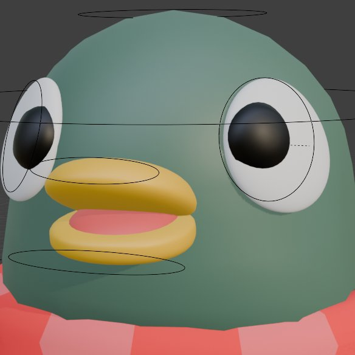
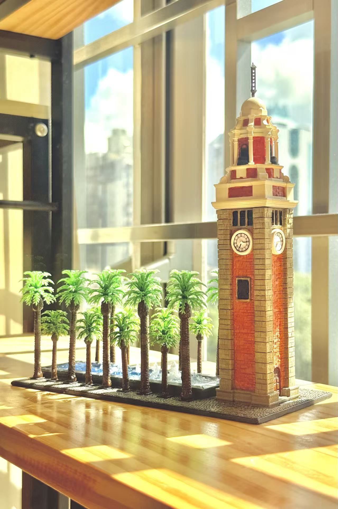

紫禁城-太和殿 Hall of Supreme Harmony,
The Forbidden City of Peking
個人項目 Individual Project
支持一下我們的社團
Support our club!
三維建模及抽象概念藝術研究社
3D Modelling and Abstract
Conceptual Art Research Society

鳴謝 Credits: @amelia.the.wolfie@padriclei

個人項目 Individual Project